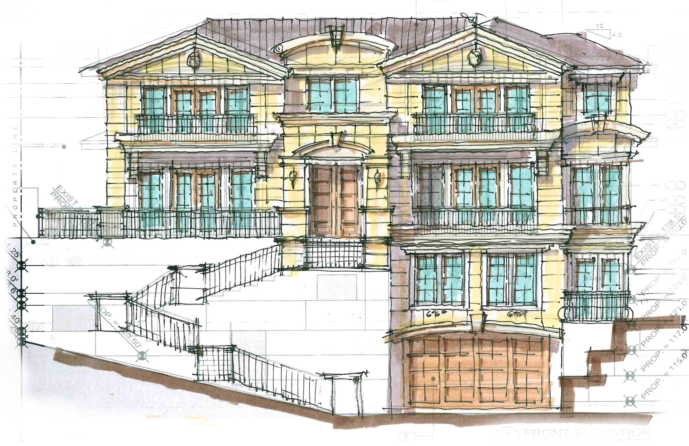
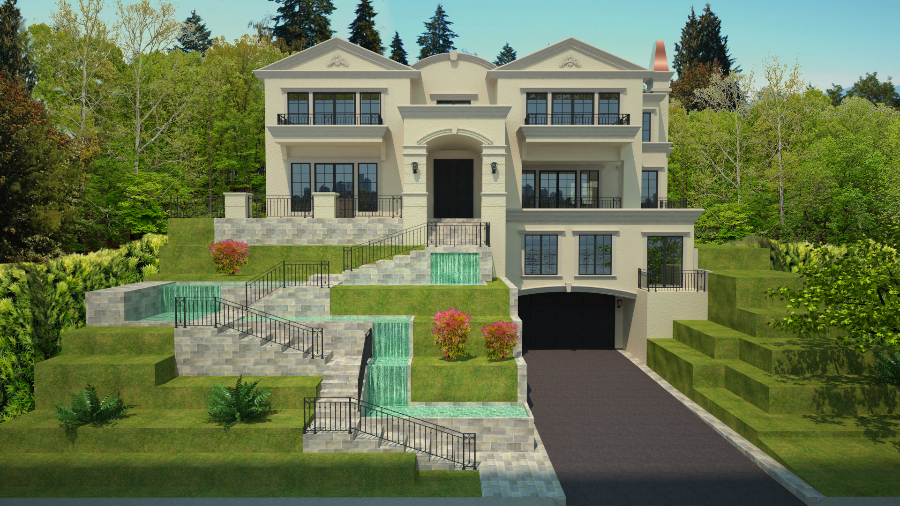
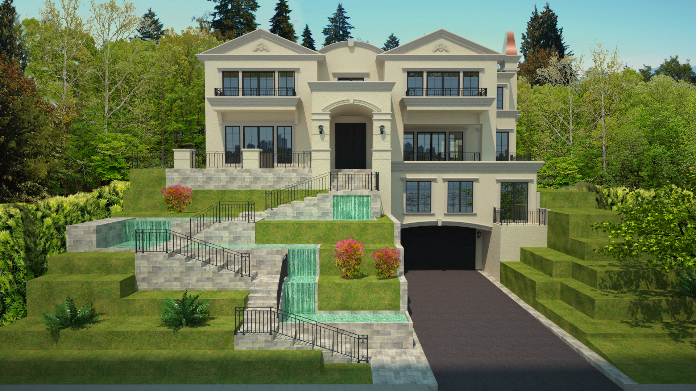

Xuan Mansion Model & Renders
The Xuan Mansion is a project I did in the summer of 2016 for residential construction of a beautiful property near Deer Lake, Vancouver. This project originally started around 2012 but construction didn't start until early 2014 due to the owners having a hard time deciding between the style of home they wanted. After construction began and the frame of the home was near complete, the owners returned from a trip to France and were very inspired by the style of the old French limestone estates and were sure their new home to incorporate this look. This meant very costly changes to the existing structure and thus my employer wanted to make sure that the owners would be completely satisfied with this final big change. For such a significant change of plan such as this, it was important that the owners got as good and accurate view of the final product before hand in order to insure that they were completely satisfied, and that is where my job started.
Starting With Sketches.
When choosing where to create our building, we knew it had to be very well thought out, as the building needed to be grounded in its surroundings. In an earlier project, my team and I took at look New York's architecture, and more specifically, the High Line park itself. Through our study, we found that this park served as a walk-through art gallery that showcased different pieces of art around New York, from beautiful murals to amazing buildings by famous architects, and we concluded that designing for people specifically creates a chain reaction and attracts visitors and even more great design extremely effectively.

Creating The Model.
To create the 3D model, I decided to use a very common piece of 3D modelling software called SketchUp. I chose this program because I have a lot of experience with it and it allows you to create very detailed models much much quicker than most other modeling programs. In the architecture world, it is more commonly used for making quick sketch models of projects and testing out different ideas quickly.
Along with the sketches, I was sent the latest 3D model of the home that someone in the firm had created, but unfortunately for me not only was the model outdated to begin with, but most of what was on there already had to be changed due to the owners change of mind. I began carefully inspecting the architectural sketches again and making note of what parts of the model would have to be totally removed and what parts I could reuse to save time.
The Final Renders
After spending hours flushing out the details on the 3D model and consulting with the architect, I was ready to begin rendering the model out in order to create a much more realistic scene that would better represent how the house would look in real life. I started this process by going to the construction site on multiple different occasions and taking photos of the surrounding area at different times of the day. From these photos, I carefully selected different parts in order to try and piece together a scene that matched the feeling of the house's actual location.
 
